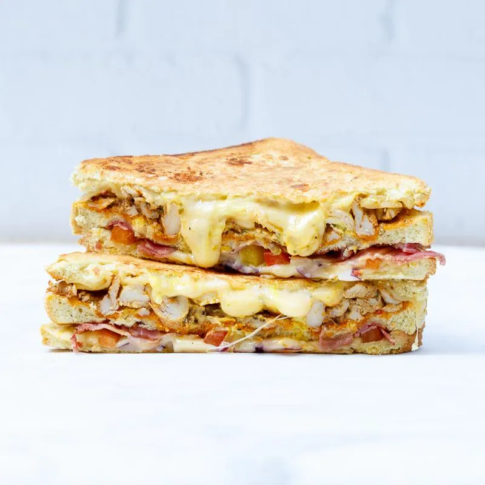

The legend
Gegrilde kip met bacon, paprika, rode ui, kaas en kerriemayo.
Gegrilde kip met bacon, paprika, rode ui, kaas en kerriemayo.
Beenham met jonge en oude kaas en een beetje grove mosterdmayo.
Mozzarella met cheddar, oude kaas en een beetje grove mosterdmayo.
Gegrilde kip met holy guacamole, cheddar, creme fraiche, rode ui en jalapenos.
Mozzarella met spinazie, semi zongedroogde tomaatjes en pesto.
Tonijn met mozzarella, cheddar, augurk en wasabimayo.
Bestel nu jouw favoriete tosti’s via UberEats of kom langs bij een van onze vestigingen. Eet smakelijk!
Bestel directWij maken verschillende crosti’s en onze ontbijt tosti’s maken we met twee sneetjes brood in plaats van drie. Sapje en koffie erbij, goede start van de dag.
Elke dag maken we verse sapjes van de de lekkerste ingrediënten: the yellow & the green juice.
Toen wij de taartjes en cakes van Brittons Bakery & Cakery proefden waren we helemaal om. Deze moesten en zouden we in ons assortiment opnemen, succes gegarandeerd.
Grote dorst en zin in iets fris? Proef onze heerlijke limo’s van pittige gember en citroenzest en onze ijsthee’s van groene thee met jasmijn en earl grey met hibiscus.
Wij proberen altijd zo zorgvuldig mogelijk te werken, toch kan het gebeuren dat gerechten ook andere allergenen bevatten bijvoorbeeld doordat in dezelfde ruimte ook met die andere allergenen gewerkt wordt. Ben je (erg) allergisch? Dan kan je dit het beste altijd aan ons melden zodat we extra goed kunnen opletten bij het maken van jouw tosti!
Bekijk ons menuWil je kaas vervangen voor vegan kaas? Of Houd je van extra spicy? Maak jou tosti helemaal af naar jouw smaak of wensen. Dit kan zowel via de bezorgplatformen als bij ons in de winkel!